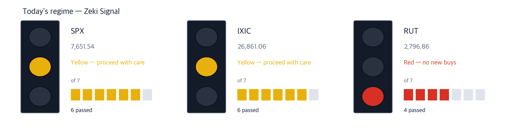

Dow 50,927 +0.04% | Nasdaq Comp. 26,872 +0.04% | S&P 500 7,666 +0.19% | Russell 2000 2,807 +0.35% | 10-yr Treasury 5.24% -0.06 pt | Zeki Signal Yellow |

Green favours buying, yellow says wait, red says hold off. The cells count how many of seven conditions are met - more cells mean the advance is broader. This signal uses the October 1 close. The S&P 500 and the Nasdaq Composite meet 6 of 7 and show Yellow; the Russell 2000 meets 4 and shows Red. Taken together the signal is Yellow.
Wait — the stance the signal implies.
In New York on October 1 the S&P 500 rose 0.19% to 7,666.45 after dipping below its 50-day average during the day. The Russell 2000 tested its 200-day average and then gained 0.35%. The Dow and the Nasdaq Composite were little changed (IBD).
Bonds turned the day. The 10-year Treasury yield touched 5.34% intraday and then fell back to close at 5.24%; the 2-year dropped 10 basis points to 4.785%. Money rushed into Treasuries while French, Italian and Greek yields jumped, and hedge funds unwinding crowded trades helped pull US yields lower (Wall Street Journal, IBD).
Here is what to do now, before the Friday open in New York.
① The September jobs report at 8:30 a.m. ET sets today's direction. Economists expect 90,000 new jobs and a 4.1% unemployment rate. The odds of an October 28 rate hike have fallen to 24% from 68.6% a week ago; a strong report could push them back up (IBD).
② Oil is swinging again. Let refiners and shippers settle for 30 minutes before acting. Brent rose 4.4% on October 1 to $102.31 a barrel. Early Friday, though, reports that France has proposed releasing 50 million barrels of EU diesel reserves sent crude futures down more than 3% (Wall Street Journal, IBD).
③ The signal is yellow. If you buy, keep it to a stock or two and decide your exit price first. The indexes bounced off key support, but the S&P 500 could still lose its 50-day average (IBD).
One number: a 24% chance of an October rate hike, lower again after 50.9% on Tuesday and 37.6% on Wednesday. Fed officials including Vice Chair Philip Jefferson signalled they may need more time before deciding whether to raise rates again (Wall Street Journal, IBD).
| Date | What to watch | What it changes |
|---|---|---|
| Oct 2 (Fri) 08:30 | September jobs report | A beat on 90,000 lifts yields and hits tech first |
| Oct 2 (Fri) premarket | Tesla Q3 deliveries | Measured against 461,974 expected, down 7% from a year earlier |
| Oct 28 (Wed) | Fed rate decision | Hike odds are down to 24%; jobs and prices will move them again |
Micron reported earnings per share up 1,003% and sales up 379% from a year earlier, and raised its outlook. The stock was flat right after the release but rose on October 1, and the semiconductor ETF (SMH) gained 1.45%. Sandisk and Seagate rose alongside (IBD).
The question is how much of that was already in the price. As long as storage demand comes from AI data centres, memory and hard-drive makers are reading the same order book.
| Close | Day | Week | 20 sessions |
|---|---|---|---|
| $1,097.39 | +3.03% | +1.56% | +14.78% |
| 3 months | Zeki Strength | Zeki Flow | From high |
|---|---|---|---|
| +12.51% | 97 | B | -12.5% |
| Who | Micron Technology, the largest US memory-chip maker. |
| What | Beat fiscal fourth-quarter forecasts and raised its outlook; rose 3.03% on October 1 to $1,097.39. |
| When | Reported after the September 30 close; first session October 1. |
| Where | Listed on the Nasdaq. |
| Why | Because each AI server needs more memory, lifting both price and volume. |
| How | Volume ran 1.45 times its 50-day average. It sits 12.5% below its one-year high. |
| Close | Day | Week | 20 sessions |
|---|---|---|---|
| $945.57 | +2.52% | +4.38% | +17.04% |
| 3 months | Zeki Strength | Zeki Flow | From high |
|---|---|---|---|
| +15.38% | 96 | A | -17.3% |
| Who | Seagate Technology, a maker of data-centre hard drives. |
| What | Rose 2.52% to $945.57 the day after Micron's report. |
| When | Thursday, October 1. |
| Where | Listed on the Nasdaq. |
| Why | Because the data AI produces ends up on high-capacity hard drives. |
| How | Volume was light at 0.57 times its 50-day average. It sits 17.3% below its one-year high. |
When yields fell, data-centre component makers led tech higher. Optical-parts maker Lumentum rose 7.7% on October 1 and closed above $1,000 for the first time after stalling there several times. Electronics distributor Avnet climbed back above a level it first cleared last month (IBD).
The more AI servers talk to each other over light, the more optical parts they need. Both are rate-sensitive growth names, so read them together with the jobs report.
| Close | Day | Week | 20 sessions |
|---|---|---|---|
| $1,045.78 | +7.67% | +12.57% | +20.12% |
| 3 months | Zeki Strength | Zeki Flow | From high |
|---|---|---|---|
| +43.59% | 97 | A | -3.7% |
| Who | Lumentum Holdings, a maker of optical components and lasers. |
| What | Rose 7.67% on October 1 to $1,045.78. |
| When | Thursday, October 1. |
| Where | Listed on the Nasdaq. |
| Why | Because more optical links inside data centres mean more of its parts. |
| How | Volume ran 1.59 times its 50-day average. It sits 3.7% below its one-year high. |
| Close | Day | Week | 20 sessions |
|---|---|---|---|
| $102.24 | +2.29% | +1.32% | +13.61% |
| 3 months | Zeki Strength | Zeki Flow | From high |
|---|---|---|---|
| +24.41% | 92 | A | -2.2% |
| Who | Avnet, a distributor of chips and electronic components. |
| What | Rose 2.29% on October 1 to $102.24. |
| When | Thursday, October 1. |
| Where | Listed on the Nasdaq. |
| Why | Because component orders rise before finished products, so distributors show the cycle early. |
| How | Volume was about normal at 0.95 times its 50-day average, 2.2% below its one-year high. |
As US forces erode Iran's grip on the strait, oil shipments through Hormuz are rebounding toward prewar levels. Prices have not fallen, because the supply chain that turns crude into fuel is still under strain; the average US gasoline price is above $4.41 a gallon (Wall Street Journal).
On October 1 the energy ETF (XLE) rose 1.95%, led by refiners and shippers (IBD). With ships moving again and freight rates high, tanker owners book the profit first.
| Close | Day | Week | 20 sessions |
|---|---|---|---|
| $51.54 | +4.61% | +7.44% | +13.47% |
| 3 months | Zeki Strength | Zeki Flow | From high |
|---|---|---|---|
| +40.24% | 93 | A | -6.1% |
| Who | Frontline, an operator of large crude-oil tankers. |
| What | Rose 4.61% on October 1 to $51.54. |
| When | Thursday, October 1. |
| Where | Listed on the New York Stock Exchange. |
| Why | Because with the strait reopening, more voyages at high rates turn straight into profit. |
| How | Volume was 1.22 times its 50-day average, 6.1% below its one-year high. |
| Close | Day | Week | 20 sessions |
|---|---|---|---|
| $85.79 | +2.50% | +5.97% | +5.37% |
| 3 months | Zeki Strength | Zeki Flow | From high |
|---|---|---|---|
| +17.50% | 84 | A | -4.7% |
| Who | Scorpio Tankers, which carries refined products such as diesel and gasoline. |
| What | Rose 2.50% on October 1 to $85.79. |
| When | Thursday, October 1. |
| Where | Listed on the New York Stock Exchange. |
| Why | Because shipping diesel the long way to where it is short ties up more ships for longer. |
| How | Volume jumped to 3.41 times its 50-day average, 4.7% below its one-year high. |
After the October 1 close Nike cut its sales outlook and said it will shrink the company, with job cuts starting next year (Wall Street Journal). The stock fell after hours (IBD). It closed the regular session at $35.15, 54% below its one-year high, with Zeki Strength of 5 and the trend gauge (MACD line) below zero. We will revisit once sales show a floor.
One more left out for the same reason — Mattel, which drew takeover interest from licensing group Authentic Brands (Wall Street Journal). The stock jumped 18.8% on October 1, but on deal news; Zeki Strength is 43 and the trend gauge sits below zero.
| Name | ①up over 20 sessions | ②Strength 90+ | ③flow 3mo A or B | ④2wk not weaker | Met | Weight of evidence |
|---|---|---|---|---|---|---|
| MU | O | O | O | O | 4/4 | Well grounded |
| STX | O | O | O | O | 4/4 | Well grounded |
| LITE | O | O | O | O | 4/4 | Well grounded |
| AVT | O | O | O | O | 4/4 | Well grounded |
| FRO | O | O | O | X | 3/4 | Grounded |
| STNG | O | X | O | X | 2/4 | Needs checking |
The four columns ask: ① up over 20 sessions? ② Zeki Strength 90 or higher? ③ three-month Zeki Flow A or B? ④ has money held up over the last two weeks? The count of O sets the weight of evidence. Of today's 6 names, 5 pass ② and 4 pass ④.
The US publishes no daily breakdown of who bought how many shares. The grades below estimate buying pressure from how trading splits between rising and falling days; they are not a tally. Data run to the October 1 close.
Names that appeared in yesterday's table are left out; only new entries are shown.
| Name | Flow 3mo→2wk | Volume | How to read it |
|---|---|---|---|
| Arcelor Mittal NY Registry Shares NEW MT | B → E ↓ | 1.30x | Caution — The grade is falling while volume rises |
| Credo Technology Group Holding CRDO | C → A ↑ | 1.28x | Watch✗ — Buyers came in hard |
| APi Group APG | A → A = | 0.86x | Watch✗ — Buying over both 3 months and 2 weeks |
| Heico Corporation HEI-A | E → A ↑ | 1.11x | Check✗ — Higher, but on thin volume |
| Cadence Design Systems CDNS | B → A ↑ | 1.08x | Check✗ — Higher, but on thin volume |
| Heico Corporation HEI | D → A ↑ | 1.00x | Check✗ — Higher, but on thin volume |
| Applied Materials AMAT | D → A ↑ | 0.86x | Check✗ — Higher, but on thin volume |
| Brighthouse Financial BHF | E → A ↑ | 0.86x | Check✗ — Higher, but on thin volume |
Even when the story and the price agree, we check the money separately. The table asks whether volume over the last five sessions cleared its 50-day average.
| Name | Cleared the 50-day average? | Zeki Flow 3mo → 2wk | How to read it |
|---|---|---|---|
| MU | 0.83x ✗ not cleared | B → A | Check — Higher, but on thin volume |
| STX | 0.63x ✗ not cleared | A → A | Wait — Holding, but volume has dried up |
| LITE | 1.10x ✓ cleared | A → A | Watch — Buying over both 3 months and 2 weeks |
| AVT | 1.07x ✓ cleared | A → A | Watch — Buying over both 3 months and 2 weeks |
| FRO | 1.09x ✓ cleared | A → C | Wait — The grade slipped on normal volume |
| STNG | 1.75x ✓ cleared | A → B | Caution — The grade is falling while volume rises |
The words do not describe our own trades. Watch means price and volume point the same way; Caution means the grade is falling while volume crowds in; Wait means the grade slipped without volume crowding in.
| Weight of evidence | Names | Beat S&P 500 | Winners led by | Losers trailed by | All averaged |
|---|---|---|---|---|---|
| Well grounded | 31 | 18 / 31 | +3.62%p | -4.07%p | +0.40%p |
| Grounded | 15 | 6 / 15 | +3.04%p | -3.67%p | -0.99%p |
| Needs checking | 18 | 6 / 18 | +3.85%p | -2.87%p | -0.63%p |
| No basis | 4 | 0 / 4 | none | -2.42%p | -2.42%p |
| Excluded | 7 | 0 / 7 | none | -3.51%p | -3.51%p |
| Well grounded 31 | +0.40%p | ||||||
| Grounded 15 | −0.99%p | ||||||
| Needs checking 18 | −0.63%p | ||||||
| No basis 4 | −2.42%p | ||||||
| Excluded 7 | −3.51%p |
The centre line is S&P 500. Right is ahead, left is behind. The grey number is how many names are in that band.
Of 31 Well grounded names, 18 beat S&P 500. Those 18 led by 3.6%p on average; the 13 that lost trailed by 4.1%p. All together: +0.4%p.
After 20 sessions (about a month): results first arrive on Oct 7; they are added here as a table as they fill.
After 60 sessions (about three months): results first arrive on Dec 3; they are added here as a table as they fill.
Verdict. Once both markets together reach 60 cases for a window, we run the test fixed in advance and print what it says. 5 sessions, 134 cases — Not shown to beat the index. But higher-grade names did better. (41.8% beat the index) · 20 sessions: 0 of 60 · 60 sessions: 0 of 60
| When | What to watch | What it means |
|---|---|---|
| Premarket (08:30 ET) | September jobs and the 10-year yield | A big beat on 90,000 with the 10-year above 5.3% hits tech first |
| First 30 minutes (09:30-10:00 ET) | Whether Micron trades above its six-session high of $1,108.72 | Above it, buying after the report continues; below it, the beat was already priced in |
| Last 30 minutes (15:30-16:00 ET) | Whether the S&P 500 closes above its 50-day average of 7,651 | It was lost and regained intraday on October 1; losing it at the close would mean the bounce failed |
Today's jobs report will set next week's direction for rates. Beyond Wall Street: the Pentagon is sending a third carrier strike group and 9,000 to 10,000 more troops to the Middle East; Accenture's fourth-quarter profit rose to $1.99 billion on AI demand; and US third-quarter car sales stalled, with GM down 5.5% (Wall Street Journal).
This is the Rex Way, ZekiRex™